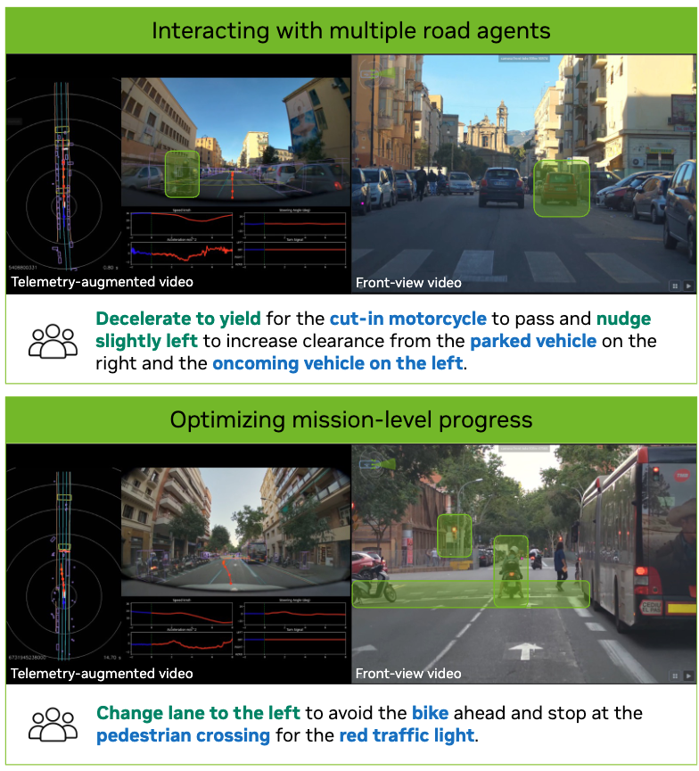
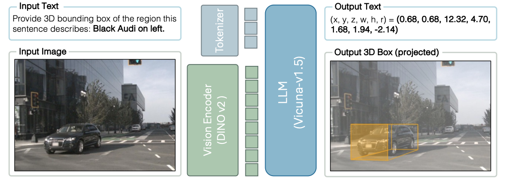
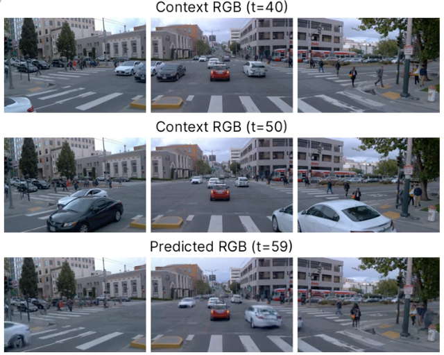
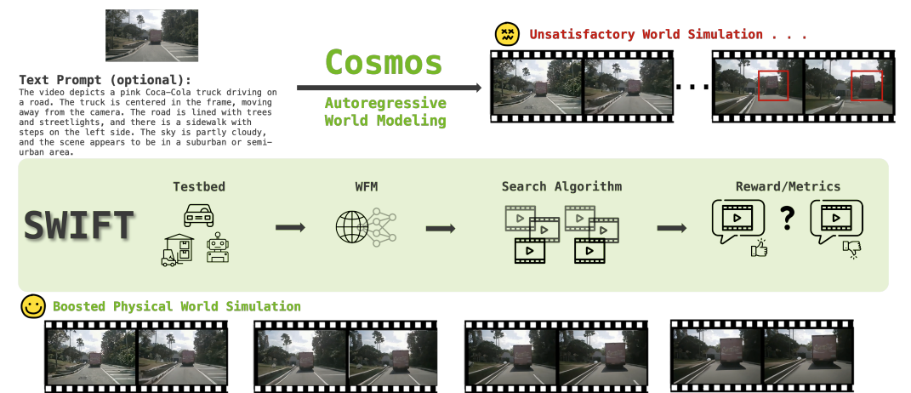
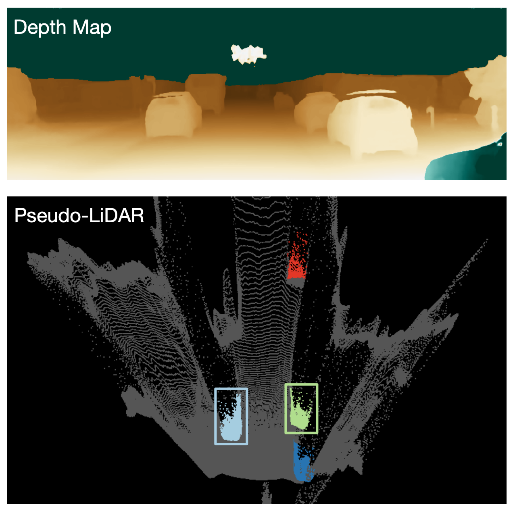
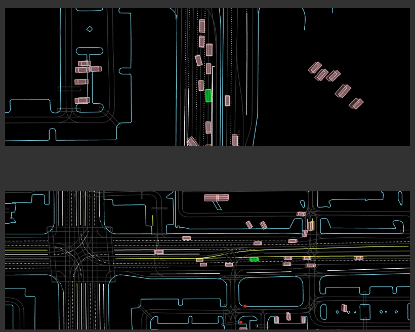

Research
I'm interested in Multimodal foundation models, 3D computer vision, autonomous driving.
My research focuses on developing end-to-end learning systems for autonomous vehicles,
and let the driving model can think itself.
I'm particularly interested in vision-language-action (VLA) models with reasoning capabilities
and world models for embodied AI.
|
|

|
Alpamayo-R1: Bridging Reasoning and Action Prediction for Generalizable Autonomous Driving in the Long Tail
Project Lead
NVIDIA Technical Report, 2025
PDF
A vision-language-action model integrating Chain of Causation reasoning with trajectory planning, demonstrating improvements on open-loop, closed-loop evaluation, and real-world road tests.
|
|

|
Language-Image Models with 3D Understanding
Jang Hyun Cho, Boris Ivanovic, Yulong Cao, Edward Schmerling, Yue Wang, Xinshuo Weng, Boyi Li, Yurong You, Philipp Krähenbühl*, Yan Wang*, Marco Pavone*
* Co-advised
ICLR, 2025
OpenReview
Bridging vision-language models (VLMs) with 3D understanding.
|
|

|
STORM: Spatio-Temporal Reconstruction Model for Large-Scale Outdoor Scenes
Jiawei Yang*, Jiahui Huang*, Yuxiao Chen, Yan Wang, Boyi Li, Yurong You, Maximilian Igl, Apoorva Sharma, Peter Karkus, Danfei Xu, Boris Ivanovic, Yue Wang*, Marco Pavone*
ICLR, 2025
OpenReview
A feed-forward, self-supervised method for fast and accurate reconstruction of dynamic 3D scenes from sparse, multi-timestep, posed camera images.
|
|

|
Can Test-Time Scaling Improve World Foundation Model?
Wenyan Cong*, Hanqing Zhu*, Peihao Wang, Bangya Liu, Dejia Xu, Kevin Wang, David Z. Pan, Yan Wang, Zhiwen Fan, Zhangyang Wang
COLM, 2025
arXiv
Exploring test-time scaling strategies for world foundation models.
|
|

|
Pseudo-LiDAR from Visual Depth Estimation: Bridging the Gap in 3D Object Detection for Autonomous Driving
Yan Wang, Wei-Lun Chao, Div Garg, Bharath Hariharan, Mark Campbell, Kilian Q. Weinberger
CVPR, 2019
arXiv
Proposing the Pseudo-LiDAR representation that bridges the gap between image-based and LiDAR-based 3D object detection.
|
|

|
Waymax: An Accelerated, Data-Driven Simulator for Large-Scale Autonomous Driving Research
Cole Gulino, Justin Fu, Wenjie Luo, George Tucker, Eli Bronstein, Yiren Lu, Jean Harb, Xinlei Pan, Yan Wang, et al.
NeurIPS, 2023
arXiv
/
code
A high-performance, JAX-based simulator for autonomous driving research enabling large-scale RL training.
|
Academic Service
Workshop Organizer:
- ECCV 2024: Autonomous Vehicles meet Multimodal Foundation Models
- CVPR 2023: Autonomous Driving Workshop
- CVPR 2022: Autonomous Driving Workshop
- CVPR 2021: Autonomous Driving Workshop
Conference Reviewer: CVPR, ICCV, ECCV, NeurIPS, ICLR, ICML, ICRA, AAAI, IJCAI, AISTATS
Journal Reviewer: IEEE TPAMI, TKDE
|
|
{kind=link}